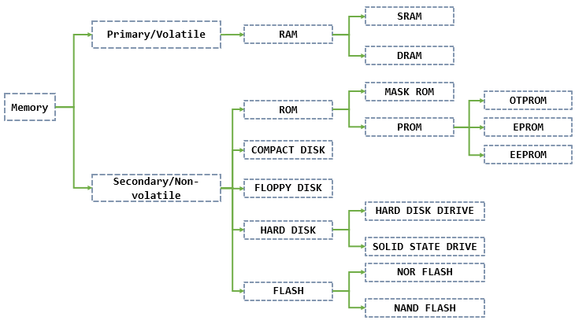
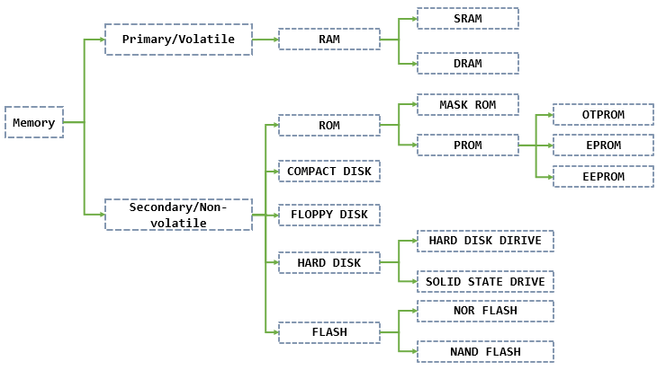
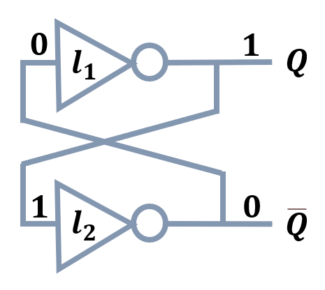
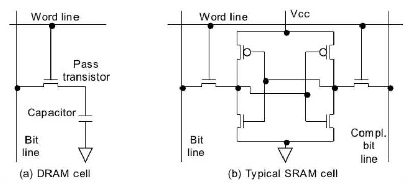
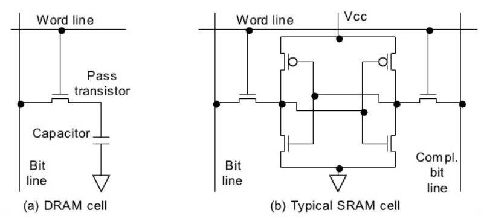
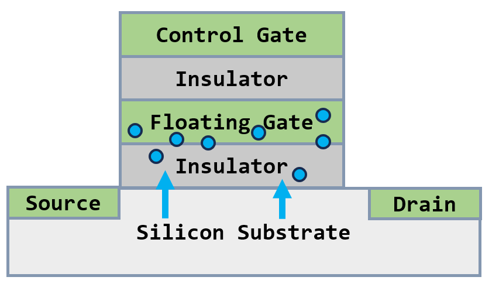
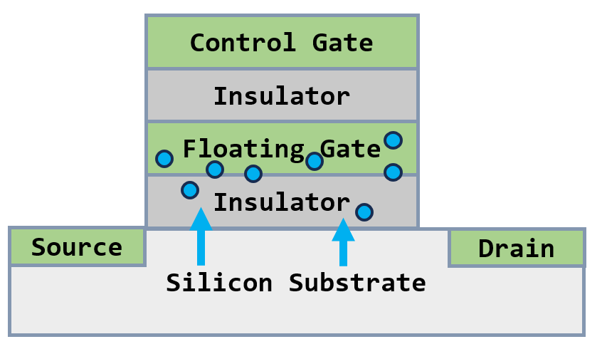

Reproduced in 8 types of memory every embedded engineer should know about!
The majority of memory can be categorized as shown in the following picture:
 

The real difference between primary and secondary memories is the speed/volatility(without power) tradeoffs.
Primary Memory
Primary memory is very fast, but it cannot hold data without power. The popular name for Primary Memory is RAM, which has 2 most important types namely SRAM and DRAM.
Bistable Circuit usually consists of two complementary transistors or other switching devices, one used to hold the circuit in one stable state and the other to switch the circuit to another stable state. The switch between these two states is triggered by the input signal. Bistable Circuit can store data. Latches and registers are bistable devices.

- SRAM is the use of bistable flip-flop to save information, as long as the power is not lost, the information is not lost.
- DRAM uses capacitors to store charge to store information, so data stored in the DRAM must be constantly refreshed every few milliseconds or else it will end up being erased. The action is taken care of by a special device named DRAM controllers.
 

| SRAM | DRAM | |
|---|---|---|
| Construction Principle | It uses a cross-coupled flip flop configuration of transistors | It uses a capacitor transistor circuit to hold data |
| Cost | Relatively more expensive, it needs more transistors per bit of data it can store | Relatively less expensive, as fewer transistors per bit of storage are needed |
| Speed | Faster | Slower (capacitor charge and discharge time) |
| Volatility | As long as power is ON, it can store data since it uses no capacitors | Data needs to be continuously refreshed (usually in the order of 4 times a second) since the capacitors leak power. |
| Power consumption | Less | More |
| Density | Less dense (6 transistors, more area needed) | Highly dense (1 pass transistor and 1 capacitor, easy to integrate) |
| Addition components needed | None | DRAM controllers are needed to make it work like an SRAM. This controller offloads the data refreshing duties of a microprocessor and hence a DRAM coupled with a DRAM controller behaves more like an SRAM from the processor’s perspective. |
| Application areas | Cache memory (Ls2) | Main memory (memory chips) |
NVRAM or Non Volatile Random Access Memory, is a special type of RAM that can store data permanently. It’s basically an SRAM with a power supply
Secondary Memory
ROM
MASK ROM: The main characteristic of this device is the fact that the data is written onto the device as it gets manufactured and it is impossible to change them. This is done by designing the chip in such a manner so that it already contains the necessary data.
In order to mass production, the manufacturer makes a ROM or EPROM with original data as a sample in advance, and then mass-produces the same ROM as the sample. This kind of ROM sample for mass production is the MASK ROM, and the data burned in the MASK ROM can never be modified.
PROM stands for Programmable Read-Only Memory. These are programmable chips for user needs, the main characteristic being it can only be programmed one time. That is it cannot be erased or reprogrammed. They are also known as One Time Programmable devices or OTPs for short.
EPROM stands for Erasable Programmable Read-Only Memory. These chips usually have a small glass window on top and if you expose them to direct sunlight(UV, ultraviolet) that will erase the chip’s data. They can then be programmed again with fresh data.
- Cons: Inconvenient, instability, can not be exposed to the light source otherwise easy to lead to data loss
EEPROM stands for Electrically Erasable Programmable Read-Only Memory. These chips can be erased and reprogrammed using electricity as opposed to exposing them to UV rays as EPROMs. EEPROM can be erased and reprogrammed on a computer or dedicated device, generally plugging and playing.
FLASH MEMORY
The basic storage unit of flash memory is the transistor-based storage unit, and each storage unit can store 1 bit of data. Storage units are usually organized into a block, and each block contains thousands of storage units.
Each storage unit has a floating gate to store electric charges. The state of a storage unit can be determined as “1” or “0” based on the amount of electric charges stored in the floating gate. The state of a storage unit is changed by injecting or extracting electrons into/from the floating gate to modify the amount of electric charges stored in it.
Flash memory uses Hot carrier injection(HCI) mechanism to write data. In simple terms, a certain storage unit is grounded at the source, a positive voltage is applied to its control gate, and a positive voltage is applied to the drain to generate a strong electric field between the source and drain. This will give electrons enough energy (hot carriers) to be attracted by the voltage at the control gate and injected into the floating gate. Afterwards, as the insulating material on the top and bottom of the floating gate is not conductive, these electrons are trapped in the floating gate and cannot escape. (Every time electrons enter and exit the surrounding silicon dioxide on the floating gate, it will cause aging[1])
 

To save cost, flash memory adopts page programming mode. Each page contains a certain number of storage units, and all units in a page are written at the same time.
- Cons: Flash memory has the issue of wear-out (write/erase endurance limits), which is usually mitigated by disabling bad blocks, and then reducing usable capacity.
- USB flash disk, namely “U disk”, is a new generation of storage devices based on USB interface and flash memory chip as storage medium. It is basically composed of five parts: USB port, main control chip, flash memory chip, PCB backboard, outer package.
- USB flash drives, SD cards, and SSDs are a type of storage device that uses flash memory chips as the storage medium. They are primarily composed of a controller (main control) and flash memory chips, and have no mechanical structure, consisting purely of electronic circuitry. They are resistant to physical shocks and impacts. The controller manages data storage and other functions. Even after power loss, data remains stored in the memory cells.
- USB flash drives generally have a cache on them to prevent the loss of data copies from being quickly plugged in/out.
OTHER
- Hard Disk Drive: The disk reads data according to the polarity of the magnetic particle and writes data according to the polarity of the magnetic head.
- Compact Disk: CD-ROM can only be read and not written to because after being burned once, each unit has a fixed different reflectivity (the reading probe emits laser and the reflected laser is read as “1”, or non-reflected laser is read as “0”).
- Floppy Disk: A type of magnetic disk, less capacity, slower speed.